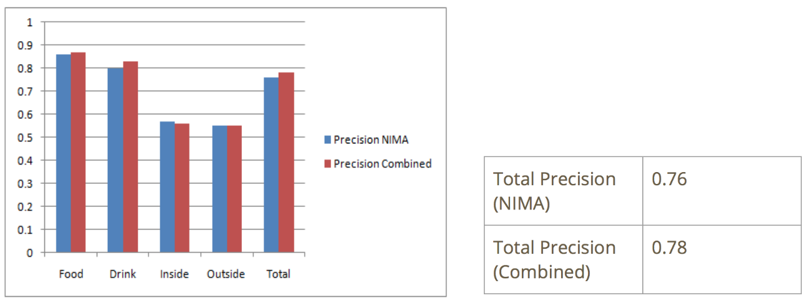
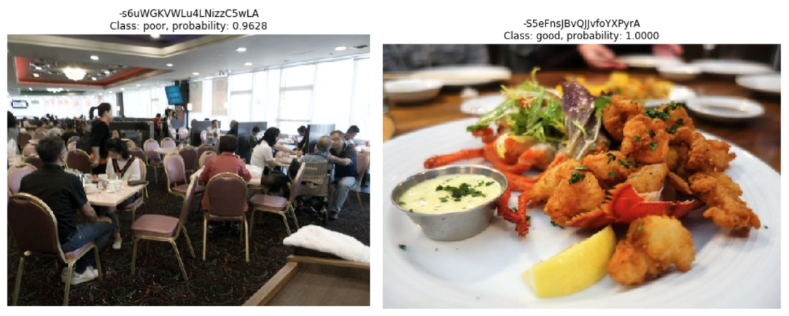
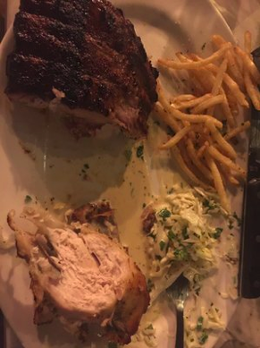

Improving Cover Pictures for Yelp Businesses
Nikhita Karnati (nkarnati3@gatech.edu)Fall 2018 CS 4803 / 7643 Deep Learning: Class Project
Georgia Tech
Introduction / Background / Motivation
What did you try to do? What problem did you try to solve? Articulate your objectives using absolutely no jargon.
Which one among the below two pictures would make you pick the Restaurant?Most people would say the one on the left. What are the issues in the photo on the right?
People often times rely on ratings and reviews to make decisions regarding going to a restaurant, booking a specific hotel, buying something online, etc. A website like Yelp can be useful for users who want to pick the best option they can, and spend less time and money on the things that they won’t like. Pictures of food, interior or drinks are really helpful when picking a restaurant, but there are times that the pictures people post on Yelp are blurry, or irrelevant. It can be hard to navigate through all of those images to find something that is actually informative and with good quality.
An example of a cover page of a Restaurant can be seen below. Most of the cover pictures give less information and are definitely not persuasive to pick the Restaurant.
The motivation for the project is the dataset challenge posted by Yelp[1]. They posted a huge dataset and challenged students to find something interesting. Creating a model to find “good” photos using them is being tried. The concept of being “good” is about both the quality of the picture and how informative it is. The concept of informative is kind of subjective so I took up the definition as food, drinks, inside and outside with not much people cluttering in the photo. That is because they give general idea on a Restaurant and what a normal user would look for in choosing a Restaurant.
How is it done today, and what are the limits of current practice?
Currently, Yelp is using a model with Convolutional Neural Networks (CNNs) to classify photos as beautiful or not[2]. As manually labelling hundreds of photos as beautiful or not is costly, time-consuming, and highly dependent on the preferences of graders, they created training data by considering good proxy for quality as whether a photo was taken by a digital single-lens reflex camera, or DSLR. The justification given was that as these cameras give the photographer more control over which parts of the image are in focus and further that DSLR sensors are larger and more sensitive to light, allowing great photos to be taken in even very dim situations. Finally, as people who regularly use DSLR cameras may have more experience and skill in capturing higher quality images. They mentioned that training their model on such photos allows the model to learn important photo features and recognize great photos even when they are not taken by a DSLR camera. They trained model using AlexNet and GoogLeNet and tested on manually labelled photos. The performance achieved by Yelp’s model is given below.First model is AlexNet trained using 100K photos, second model is trained on 1M photos and third model of GoogLeNet is trained using 1M photos. They are tested on thousands of photos manually labelled by Yelp.
The limits of the approach are:
- Finding just the good quality photos is not enough to help users and businesses and to improve the cover photos as the photos also need to be relevant
- Most of the photos uploaded on Yelp are taken using mobile phones as people generally do not carry DSLR to Restaurants and the model may not work well on them
- All photos taken on DSLR need not be beautiful photos and similarly all non-DSLR photos need not be not beautiful
Who cares? If you are successful, what difference will it make?
My success makes the following differences:- Yelp users upload around 100,000 photos a day to a collection of tens of millions, and the rate continues to grow. In fact, Yelp is seeing a growth rate for photos that is outpacing the rate of reviews. These photos provide a rich tapestry of information about the content and quality of local businesses. If I am successful, then with the help of this automated system which can handle the growth rate of yelp photos, we can make sure that the cover pictures that a user sees, are the best ones by being both of good quality and informative. It will save a user’s time and also benefit restaurants and business owners by providing a better first impression and in turn helping the Yelp’s business.
- Currently my focus is just on Restaurants and it can be easily extended to all types of businesses in Yelp based on the relevance criteria
- It can be easily extended to provide sorting of the images by converting the probability of photo being good as a score which would be greatly helpful in sorting cover photos
- It can be used for different platforms such as Yelp, Google Restaurants, Foursquare etc.
Approach
What did you do exactly? How did you solve the problem? Why did you think it would be successful? Is anything new in your approach?
The below diagram shows the Yelp’s approach and my approach. Yelp tried to find just beautiful (quality) photos but I am trying to find both quality and informative photos.
Figure: Difference between Yelp's model and my model
Data
The dataset posted by Yelp has 280992 photos (~10GB) of 188,593 businesses. There are 1305 distinct businesses in total with most common ones being Restaurants, Shopping, Beauty and Spas, Home Services and Health & Medical. My focus is on Restaurants which are around 57,000 among 188,593 businesses. I sampled 250 Restaurants with 4038 photos with 3525 for training and 513 for testing.
Test Set
According to me the good photo has following features under informative and quality domains.
For example,
Hence test set is given two labels based on above criteria. Comparing the goodness of photos can seem like a very subjective task. What makes one photo preferable to another can depend on many factors and may be different depending on the user who is performing a search. So general idea and rubrics were used. The test set is labelled thrice through the whole process. That is because when the model is tested and after looking at false positives and false negatives, a clear disagreement with manual labels was seen. It was surprising most of the times why the picture was labelled not beautiful or not informative. So, manually labelling the test set was a huge important task.
Train Set
The train set is to be created by labelling in terms of both quality and informativeness. To label the train set for quality, I used Neural Image Assessment (NIMA) CNN model created by Google which rates an image in terms of good looking/attractiveness on a scale of 1 to 10.
The NIMA architecture[4] is given below.
Their proposed quality and aesthetic predictor stands on modified baseline image classifier network. More explicitly, a few different classifier architectures such as VGG16, Inception-v2, and MobileNet were explored for image quality assessment task.
For this project, MobileNet which is an efficient deep CNN base mainly designed for mobile vision applications is chosen. In this architecture, dense convolutional filters are replaced by separable filters. This simplification resulted in smaller and faster CNN models. Last layer of classifier network is replaced by a fully-connected layer to output 10 classes of quality scores. Baseline network weights are initialized by training on ImageNet dataset, and the added fully-connected weights are initialized randomly.
The NIMA model is trained on the three datasets of AVA, TID2013 and LIVE. For this project, AVA dataset is chosen. AVA is Large-Scale Database for Aesthetic Visual Analysis dataset which contains about 255,000 images, rated based on aesthetic qualities by amateur photographers.
Soft-max cross-entropy is widely used as training loss in classification tasks. However, in the case of ordered-classes (e.g. aesthetic and quality estimation), as cross-entropy loss lacks the inter-class relationships between score buckets. As training on datasets with intrinsic ordering between classes can benefit from EMD(Earth Mover’s Distance) based losses by penalizing mis-classifications according to class distances was used.
Some test photos from the large-scale database for Aesthetic Visual Analysis (AVA) dataset, as ranked by NIMA, are shown below.
After training, the aesthetic ranking of these photos by NIMA were found to closely match the mean scores given by human raters. They found that NIMA performs equally well on other datasets, with predicted quality scores close to human ratings. This is the reason this model is chosen to label the Yelp photos in terms of quality.
Analysis of NIMA using test data labels of both “Quality” and “Informative”
To understand the performance of NIMA, used NIMA MobileNet model to label the test photos as beautiful or not based on quality. The scores were mostly in between 3 and 7 and are normalized between 0 and 1. Different thresholds from 0.1 to 0.9 were tried and all photos above threshold are labelled as good quality and the ones below as not. The correlation of these labels with manually assigned labels is measured. As threshold increased true positives decreased and true negatives increased. 0.5 gave a good balance of values.
Initially there was a plan to just use NIMA as it is a deep CNN that is trained to predict which images a typical user would rate as looking good (technically) or attractive (aesthetically) which gives a quality label and also as it relies on the success of state-of-the-art deep object recognition networks, building on their ability to understand general categories of objects despite many variations which gives informative label.
Issue with NIMA:
The NIMA assigned labels on Test Set are evaluated using manually assigned quality and informative labels. An issue of false positives given below was seen.
As we can see most of the false positives were interior or outdoor photos where the model couldn’t recognize the objects. So, it was understood that NIMA could predict the quality score better than information. To deal with this issue Clarifai, an object detection CNN Model was incorporated which will be explained in the later section.
Analysis of NIMA using test data label of just “Quality”
Then, NIMA is evaluated using just the quality labels and the following performance is observed.
The precision was decent, but it had a bad accuracy. Found a pattern in false negatives based on contrast and brightness. To deal with this issue, following heuristics were added.
Analysis of NIMA + Heuristics using test data label of just “Quality”
The photos labelled by NIMA as not beautiful are further evaluated using these metrics. After adding these metrics, the following improvement is seen.

Both the accuracy and precision had improved and the issue of false negatives reduced. Thus, NIMA with heuristics is chosen to label photos for quality.
Clarifai
Now, to deal with informativeness of the photos, Clarifai - an object detection CNN Model[3] is employed. The core of Clarifai's technology is based on convolutional neural networks and is a process which enables a computer to learn from data examples and draw its own conclusions, giving applications the ability to predict correct tags for images or videos. It has pre-built recognition models that can identify a specific set of concepts like food or travel, and its general model which can identify a range of concepts including objects, ideas, and emotion. The latest Model 1.5 with machine-labeled datasets claims to recognize up to 11,000 concepts from object detection, as well as things like mood or theme.
It can detect different concepts like Food, Person, Interior, Drink, Outdoors etc. It gives probability for these different concepts in a photo. By considering a good threshold of 0.8 for each and considering the photos with less cluttering of people the photos are labelled informative or not. Some of the examples of probabilities are shown below.
Probability of Food: 0.987
Probability of Drink: 0.995
Probability of Indoors: 0.927
Probability of Outdoors: 0.991
Analysis of Clarifai using “informative” labels
By considering a good threshold of 0.8 for each and considering the photos with less cluttering of people the photos are labelled informative or not, the following correlation with manual “informative” labels is achieved.
As it can be seen, the results were good enough on Food and Drink compared with Outside and Inside. But the overall performance is quite good with accuracy around 90.8% and precision and recall more than 93%.
Easy and Hard cases of different categories are analyzed.

By introducing Clarifai, the issue of False Positives from using just NIMA mitigated and the improvement is shown below. It has to be noted that this improvement is over using just NIMA not NIMA with heuristics.
Train and Test Sets
As there is a great correlation of NIMA+Heuristics with “beautiful” labels and Clarifai heuristics with “informative” labels, the train data is labelled based on being both beautiful and informative. The test set as mentioned above is labelled manually. These two methods gave the following spilt of data.

Models
Using these, train and test sets, three models were tried out.
- Transfer Learning using AlexNet
- Transfer Learning using VGG-16 as Feature Extractor
- Own CNN architecture
I thought I would be successful because clear drawback in the Yelp’s assumptions and approach was observed but was skeptical. Just wanted to see if I could add any value by introducing a better metric for quality and altogether a new concept of informativeness. The new factor in my approach is introducing the concept of informativeness, improvising the quality assessment approach and also considering the fact that most photos uploaded on yelp are not taken using DSLR.
Experiments and Results
How did you measure success? What experiments were used? What were the results, both quantitative and qualitative? Did you succeed? Did you fail? Why?
Performance EvaluationThe performance of the model is evaluated using Accuracy and Precision and with emphasis on Precision. This is because since the photos are huge in number, it is okay to lose a good photo as a bad (false negatives) one but it is not acceptable to have a bad photo as good (false positives) because these good photos are used as cover photos.
Experiments
To start off, just went with Yelp’s best model, AlexNet. Yelp retrained the whole network due the dataset size of 1M photos. This is a form of transfer learning where a pretrained model is fine tuned by continuing the backpropagation. It is possible to fine-tune all the layers of the ConvNet, or to keep some of the earlier layers fixed (due to overfitting concerns) and only fine-tune some higher-level portion of the network. This is because as earlier features of a ConvNet contain more generic features (e.g. edge detectors or color blob detectors) that should be useful to many tasks, but later layers of the ConvNet becomes progressively more specific to the details of the classes contained in the original dataset. And yelp retrained the whole network confidently without overfitting concern as the dataset is large enough.
As my sampled dataset is relatively small, transfer learning using is used by fine tuning only the AlexNet’s fully connected layers which contain Imagenet specific features. The reason behind this is since AlexNet is trained on ImageNet which has learned some of the concepts of current problem as object shapes give information and so the initial layers would be helpful.
1. AlexNet
AlexNet is a Convolutional Neural Network with five convolutional layers, three fully connected layers, overlapping max pooling, ReLU activation and dropout regularization and is shown below.
- Model A: Retraining the last fully connected layer
- Model B: Retraining the last two fully connected layers
- Model C: Retraining the three fully connected layers
Hyperparameters tuned are:
- Layers to train
- Learning rate
- Dropout rate
- Number of epochs
Results
With just NIMA + Clarifai (with just ‘Food’ concept), following performance is achieved.
By adding heuristics to NIMA and all other concepts to Clarifai following results are achieved.
Analysis
Model A: Retraining the last fully connected layer
As we can see accuracy is increasing with time and cross entropy loss is decreasing.
The following photos are agreed and disagreed by AlexNet and test labels.
Agree
Disagree
Learning information more than beauty
After verifying the correlation of labels assigned by AlexNet with manually assigned labels of “Quality” and “Informative”, there is a greater agreement with informativeness rather than quality which says that the model was able to learn about information more than beauty.
Model B: Retraining the last two fully connected layers
As we can see accuracy is increasing with time and cross entropy loss is decreasing.
Agree

Disagree
Learning usefulness more than beauty - Even in this model, most of the photos labelled right were informative but not of great quality.
Model C: Retraining the three fully connected layers
As we can see accuracy is increasing with time and cross entropy loss is decreasing.
Agree
Disagree
Learning information and beauty (not to great extent) This model is learning usefulness and beauty but not to a great extent.

Comparison of accuracy, precision and runtimes of three models is given below.
Runtime Evaluation: cpu(i7) 2.20GHz, 8GB RAM
AlexNet with transfer learning is overfitting due to small dataset size. Even fine tuning the final fully connected layers didn’t seem to work well with the dataset size.
2. VGG-16 as Feature Extractor
To avoid the overfitting issue by fine-tuning using small dataset, transfer learning by extracting features strategy is tried out. Support Vector Machine classifier is chosen as it can deal with high dimensional data without overfitting. The features are extracted using VGG-16 model. Nima with heuristics and Clarifai labels are added as features.
The architecture of VGG-16 model is given below. It has 13 convolutional layers followed by 3 fully connected layers.
Following two models are tried.
- Model A: Using Penultimate layer features - Since the dataset is small and partially similar to the original dataset (Imagenet) on which VGG-16 is trained on and expecting higher level features (specific to dataset trained on) to be relevant to this dataset.
- 1*7*7*512 = 25K features are extracted
- NIMA with heuristics and clarifai labels are added as features
- Model B: Using Antepenultimate layer features - Since the dataset is small and partially dissimilar to the original dataset, it might work better if SVM is trained from activations somewhere earlier in the network which has generic features.
- 1*14*14*512 = 100K features are extracted. Performed Principal Component Analysis (PCA) to perform dimensionality reduction
- NIMA with heuristics and clarifai labels are added as features
Keras library is used on top of Tensorflow to extract features at different layers using VGG-16 model. For each photo in the train set, features are extracted after performing preprocessing using preprocess_input function and are appended to the numpy array. Support Vector Machines classifier from scikit-learn library is used to model the classifier. The parameters of gamma, kernel, C values are selected using cross validation using GridSearchCV.
Results
The results of both models are given below.
● Machine A: Intel i7 2.4GHz. 8GB
● Machine B: Google Cloud n1-standard-8 (8 vCPUs, 30 GB memory)
Analysis
- Precision of both models was equal to the accuracy which is equal to the split percentage of positively labelled photos in test set (60-40 split)
- The model is classifying almost all pictures as good photos
- Reason: Features extracted are not at all useful to model a good classifier. Partial similarity to the dataset is not enough to extract relevant features using transfer learning. Addition of quality and informative labels as features is not enough to make the classifier learn the corresponding features.
To avoid this issue, own CNN models are tried. Two best models are selected which have the below architectures.
- Architecture 1 [conv-relu-pool]x3 - [conv-relu] - [affine]x3 - [softmax]
- First Conv layer has 32 filters of 3*3
- Second Conv layer has 64 filters of 3*3
- Third Conv layer has 128 filters of 3*3
- Fourth Conv layer has 128 filters of 3*3
- Max pooling of 2*2
- Affine layers are of 128,64,32
- Architecture 2 [conv-relu-pool]x3 - [affine]x3 - [softmax]
- First Conv layer has 32 filters of 3*3
- Second Conv layer has 64 filters of 3*3
- Third Conv layer has 128 filters of 3*3
- Max pooling of 2*2
- Affine layers are of 128,64,32
Keras library is used on top of Tensorflow to create the models. AdamOptimizer is used with sparse_categorical_crossentropy as the targets are integers (1 for good and 0 for bad). Max Pooling is used.
Results
The results of two models is given below.
Train accuracy is increasing steadily with each epoch.The validation accuracy fluctuated for model 1 and stabilized after a point. For model 2 it started increasing after a point which shows no overfitting.
Test accuracy increased rapidly initially and stabilized after a point for both models and same is the case with test precision.
The Precision and Accuracy details are given below.
Model 1 achieved highest precision of 0.86 which equals Yelp’s best precision using AlexNet (1M). But the comparison is not valid as Yelp’s model is just for quality and test set is different. Still, this shows that I succeeded at my attempt.
Accuracies and Precisions of different concepts is given below.
Model 1 did well in terms of Food and Drink, whereas Model 2 did well in terms of outside and inside. But overall, model 3 had higher accuracy.
In terms of precision, Model 1 did well in drinks and in overall, but Model 2 did well in food and inside categories. None of the models did well in outside scenarios.
As Precision is really important for the structure of the chosen problem, Model 1 with highest precision is chosen. The issue of False Positives is seen and some of the examples are shown below.


These examples clearly fall under food and inside categories and that means the model learned the concept of information well but all of them seem to have this kind of contrast which created a doubt on model learning about the quality. To verify the same. The labels assigned by the best model is compared with the manual labels of “quality” and “informativeness”. The accuracy of informativeness is found to be more than that of quality as shown below.
This shows that the model learned informativeness more than quality.
The anticipated reasons are as follows.
- Most of the photos do not have EXIF data which says that they are not many DSLR photos and that means the sample has few photos of good quality. It may be due to the sampling or if the whole dataset is similar
- The NIMA scores were found to be between 3-6 and there were no photos in higher and lower ranges which says that most of the photos are in medium range and the model didn’t get to learn a lot about quality from them

We can see the best model in terms of precision is own CNN model and worst is the SVM with VGG-16 features.
Just to show some real time testing, the following is a picture of cover photos of Buttermilk Kitchen restaurant.
As we can see most of the photos look cluttered and not appealing. Best CNN model could eliminate some of the photos as shown below. Don’t you find this amazing? But I did!
What problems did you anticipate? What problems did you encounter? Did the very first thing you tried work?
Problems Anticipated:Problems Encountered:
- As described above, the first Issue encountered with NIMA False Positives and then with false negatives
- Clarifai false positives issue
- Overfitting issue with AlexNet transfer learning
- Transfer learning by extracting VGG-16 features didn’t work
- Dealing with huge dataset. Sampling, extracting corresponding photos, runtimes of models, dealing with 100K features extracted from VGG-16

First things did not work in all three levels of the pipeline explained in Figure: My model. In first step of labelling the train set, using just NIMA to give final label of “good” didn’t work out as it could deal with quality better than “informativeness”. To avoid this, Clarifai is employed. To deal with false negatives, heuristics are incorporated. In the third step of manually labelling the test set, the first set of labels seemed unreasonable after observing couple of results and same thing happened with second iteration and in third iteration the task of labelling got general with standard rubrics described above. In the second stage of pipeline, transfer learning using AlexNet ovefit and SVM with VGG-16 features is chosen which did really bad altogether and then own CNN architecture worked out finally. All this process created a great understanding of the problem structure and feasible models and the model can be made better now by training with larger dataset.
Technologies Used and Code
- Tensorflow along with Keras, scikit-learn libraries are used for NIMA, AlexNet, VGG-16, own CNN
- Python is used for rest work like sampling, analysis etc
- Link to code: https://drive.google.com/file/d/1A4y4-0POr0ArtNrLPr2fZSOZ27s65RgR/view?usp=sharing
- Dealing with huge dataset and working on a larger dataset brings different challenges, and does not always result in better machine learning models
- Classification without labels is a hard problem
- Keeping in mind the context of the problem and the nuances of the dataset one is dealing with, can help better understand the results
- Finding and understanding relevant work, and analyzing the applicability to our problem is important
References
[1] https://www.yelp.com/dataset/challenge[2] https://engineeringblog.yelp.com/2016/11/finding-beautiful-yelp-photos-using-deep-learning.html
[3] https://clarifai.com/demo
[4] https://arxiv.org/pdf/1709.05424.pdf
[5] https://ai.googleblog.com/2017/12/introducing-nima-neural-image-assessment.html
[6] https://en.wikipedia.org/wiki/Clarifai
[7] http://cs231n.github.io/transfer-learning/
[9] https://engineeringblog.yelp.com/2016/04/yelp-kaggle-photo-challenge-interview-1.html
[10] Wu, Yaowen & Bauckhage, Christian & Thurau, Christian. (2010). The Good, the Bad, and the Ugly: Predicting Aesthetic Image Labels. 1586-1589. 10.1109/ICPR.2010.392.